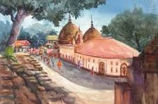

This painting carries a deep, spiritual kind of romance—not between people, but between humans and something far greater. The Kamakhya Temple rises through mist and hills, almost like it exists between the physical world and the divine. There’s a feeling of mystery, devotion, and power. The temple doesn’t just sit on the hill—it feels alive, as if it’s watching, protecting, and holding ancient secrets. The romance here is intense and sacred, rooted in faith, creation, and feminine energy.
The Kamakhya Temple is one of the most important Shakti Peethas in India, dedicated to Goddess Kamakhya, a form of Shakti (divine feminine power). • Linked to the myth of Sati, where parts of her body fell across India • Believed that her yoni (womb) fell here, making it a symbol of fertility and creation • A major center of Tantric worship, which focuses on energy, transformation, and the balance of nature Because of this, the temple is not just religious—it represents life, power, and the origin of existence, which is why artists are drawn to it again and again.
Artists usually focus more on atmosphere and emotion than strict realism. • Chiaroscuro (Light & Shadow) Strong contrast between light and darkness creates a sense of mystery and depth • Atmospheric Perspective The background (hills, sky) fades into mist, making the temple feel distant and divine • Symbolic Colors • Red → Shakti, power, fertility • Dark tones → mystery, unknown forces • Textured Brushwork Used for clouds, hills, and stone surfaces to give a raw, natural feel • • Architectural Emphasis The dome structure is highlighted to show its uniqueness and importance
Unlike some famous artworks, this painting doesn’t belong to just one artist. The Kamakhya Temple has been painted by many Assamese and Indian artists over generations. • Traditional artists focused on religious devotion and symbolism • Modern artists reinterpret it using abstract or contemporary styles •The subject itself is more important than the individual painter—it represents Assam’s spiritual identity